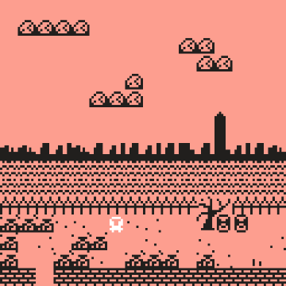
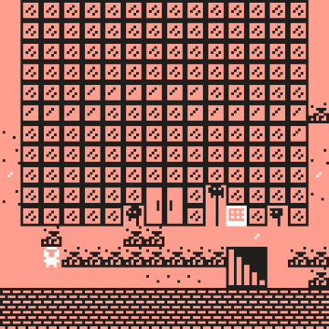

Screenshot courtesy of the artist
Anthony Brave
Wendigo World, 2022
bit.ly game engine
Curatorial Note: The decision to include Anthony Brave’s game, Wendigo World, as an online element in Shall Make, Shall Be, developed over the course of Summer and Fall 2022. The idea initially emerged as a direct outcome of conversations between Brave and show co-curator Laine Nooney, surrounding Indigenous sovereignty and the fraught history of the show’s location in Federal Hall on Wall Street–where the “Wall” in Wall Street refers to the historic blockade topped with the heads of murdered Lenape Indians. Upon learning about Brave’s game, the curators extended an invitation to host the work as part of the digital documentation of the show. While the physical show and catalog were too set in production to include the addition of Brave’s work, we hope its presence online can accentuate the problematic dimensions of law, exclusion, and “rights” engaged by many of the other works in the show. Screenshot courtesy of the artist
Artist Commentary
Wendigo World is a videogame created by me, Tony Brave (Lakota, Chippewa-Cree), using “a little editor for little games and worlds”, called bitsy. Wendigo World follows an intentionally nondescript but heavily armored Native American and takes place in a time when a wendigo has become so grotesquely large that it has swallowed the world. Some background: wendigo is the Anishinaabe name for a mythological creature created when a human eats another human. Once transformed, a wendigo is consumed by the desire to eat human flesh to stave off the incredible pain of starvation. As it consumes more and more people, a wendigo only gets bigger and bigger. Wendigos can be described as undead creatures, yet despite their undeath they retain their consciousness. Notably the overwhelming concern of whether one is a wendigo or not is a common sign of this transformation. One of the purposes wendigo stories serve, as Potawanami scholar Robin Wall Kimmerer has shared in Braiding Sweetgrass (2013), has been to teach listeners that we all have the potential within us to become a wendigo, as well as the capacity to resist its pull towards greed.
While the "Shall Make, Shall Be" exhibition deals directly with the legacy of the Bill of Rights and the location where it was enacted, this game takes up the same location from another perspective, or to be more precise, perspectives. As one plays through the game, the depictions of place visibly shift, simulating what may be described as “phenomenological” shifts for the protagonist, depending on what they are experiencing. Such shifts are not intended to have a ludic function however. That is, these shifting perspectives are not a game mechanic intended to create “interesting gameplay” so much as their function is to represent a form of everyday disorientation experienced by its protagonist. To set the “post-apocalyptic” feel of contemporary settler colonialism, the game begins as a rocky, barren landscape with muted colors, a talking cat, and a not-so-subtle nod to the original Legend of Zelda game. The game quickly transitions to an urban scene that parallels the apocalyptic one, conveying some form of relation between the two spaces of post-apocalypse and settler metropolis. This space is New York City.
To help us understand such shifts, we might draw on Tara McPherson’ discussion of the lenticular lens, an optical apparatus popularized in the form of 3D postcards wherein two images are viewable but only separately and from differing angles. According to McPherson, at the turn of mid-century the broad realms of computing and civil rights had become noticeably segregated. This, she argues, was related to the increasing practice of modularization within computing design practices, a legacy that continues to this day. Thus, this current era may be characterized by a covertly racist “lenticular logic” wherein issues related to technology are not typically understood to be connected to civil rights issues. One may interpret the shifts represented in Wendigo World as a kind of simulation of the moving of the lenticular postcard – from one angle, one sees a Native perspective, and from another angle one sees through a settler perspective. Yet, such an analogy doesn’t quite fit the lenticular logic if we are to frame Native issues as civil rights issues. Tribal sovereignty, our inherent right to self-determination over our lives, cultures, and lands, is not simply an issue of equity within the settler colonial system; through its prior and continued existence, Tribal sovereignty challenges the legitimacy of the U.S. project itself. Thus, if we were somehow able to undo the lenticular logic, interpreting it strictly within a civil rights framework, it is likely that the main concerns of Native Americans as bearers of a unique political status would be left unaddressed.
Rather than dismiss the conceptual framework of the lenticular lens, I suggest we build upon it by looking at the less spectacular side to the lenticular postcard. The back of the postcard is where senders address the location of where the postcard is to be sent as well as where one addresses their receiver with a message. We may stretch the practice of addressing to bring location and lands back into the picture, as well as Indigenous peoples whose lives and histories are intricately and intimately connected to them. Within this framework, we can understand Native peoples and issues as relegated to the backside of the lenticular apparatus. To bring it back to the game, while the phenomenological shifts depicted aren’t solely lenticular, the lenticular split is nonetheless characteristic of the space the protagonist, who has left the back of the apparatus, must navigate.
While one may draw upon enframing, enclosure, or perhaps gamification to interpret the wendigo in this game, it is by design that the “cause” of the state of the world is connected to the particularities of U.S. settler colonialism. The wendigo is not simply a cypher for Heideggerian enframing, in the sense that it is a disguised standing in for a Western theory but is instead an Indigenous way of knowing the world predating colonial contact. Thus, the wendigo is deployed in a negative sense as a swallower of worlds and in a positive sense in that it collapses or “eats” non-Native explanations of the settler colonial present. The game culminates at Wall Street, the same location the Dutch settlers historically built a literal wall furnished with Lenape heads on stakes as a warning to anyone wishing to return home that death awaited them. While many may rightly see Wall Street as a site of global domination and resistance, the protagonist cannot unsee the Indian heads on the stakes and how this complicates such critical grand narratives.
The protagonist’s crisis comes when the wendigo, transformed as a cat, removes the protagonist’s helmet, forcing them to see things as a settler might see them. Without the helmet the world appears bright and colorful, the “trash” no longer impedes the protagonist’s movement, and Wall Street appears populated with (mostly) chipper people. All of this throws the protagonist into yet another space to navigate, one of interiority. Players may notice that when shifting perspectives, there are remnants, artifacts, of the other “worlds”. There can be understood as slippages in the protagonist's attempt to maintain their own perspective. The protagonist is clearly isolated, and in the interior space we get snippets of quotes from what appear to be people from the protagonist’s past. These people, some closely related, consider the protagonist to be unwell, for example using the term “obsessed” to describe the protagonist’s relationship to the book, "Wendigo Died for Your Sins" (a reference to Vine Deloria Jr.’s Custer Died for Your Sins). As alluded by the NPC on Wall Street commenting on the character’s armor being “cosplay,” the only alternative interpretation of the protagonist’s armor to play is insanity. Thus, Indigenous mental health is brought to the forefront and the insidious displacement and erasure of one’s stories, traditions, ways of knowing and being - one’s “armor” so to speak - is drawn to greater attention in this portion of the game. Importantly, this issue of displacement and erasure is not treated as something merely of the past, but as a contemporary and everyday experience.
It is not until the protagonist navigates through an interior maze of self-doubt that they can return to their way of knowing. Doing so reveals Wall Street from another perspective: as the beating heart of the wendigo. Here the game leans deeper into the theme of Indigenous mental health in that the next encounter with the wendigo has the wendigo appear as a negative image of the protagonist. Perhaps the wendigo is inside the protagonist, or worse still, perhaps the protagonist is a wendigo themself. Players are now asked to wonder if the game, appearing so far about hunting a wendigo, is in fact a simulation of becoming one. In the final encounter, the wendigo, in a moment of hubris exposes its weakness to tobacco and it is a ceremony with the help of the protagonist’s ancestor (always with the protagonist in the form of “lighting technology”) that manages to put an end to the game. Whether the wendigo was interior, exterior or both, as well as whether the protagonist stopped the wendigo is left open, as the game returns to the protagonist’s home as if they had never gone outside.
One may draw inspiration here from micha cárdenas’ Poetic Operations: Trans of Color Art in Digital Media (2022) wherein she discusses algorithms as sets of instructions/recipes/rituals. Algorithms, not unlike ritual or ceremony, follow a particular set of operations, or sequences of activities in order to create certain intended effects in the real world. Algorithms understood and deployed as poetic operations can be used towards decolonization as cárdenas demonstrates in her own videogame Redshift and Portalmetal (2015). Wendigo World depicts a ceremony diegetically with the use of tobacco as traditional medicine, formally in that to complete the game the player must enact a set of operations in a particular order to reach the end, and it does so algorithmically in its use of digital technologies. The purpose of Indigenous ceremony, as described by Cree scholar Shawn Wilson, builds upon an Indigenous ontology and epistemology of relationality with the goal of building or maintaining good (responsible) relations. In this case, the goal is to utilize digital technologies ceremonially, against their modularizing and fragmenting effects, by bringing together the front and back sides of the “lenticular postcard”, the Native and the non-Native realities that uneasily occupy the same place… until they don’t.
Screenshot courtesy of the artist
Curator Commentary
If you walk inside Federal Hall—the site where this exhibition premiered— and step into the east side room, you’ll find a few miniature reenactments of famous moments in the site’s history. Carefully-crafted figurines of American politicians, soldiers, regular folks, and Native Americans populate the models. Most days, these small static figures are the only embodiments of the Lenape left on Wall Street. Long before George Washington was inaugurated on the site, before the current Federal Hall structure was built as a federal reserve, and well before Wall Street was the U.S. capital of capitalism, the island of Manhattan belonged to the Lenape peoples—as it still does today. Sometime around 1660, the Dutch colonizers of Lenapehoking built a wall along what we know as Wall Street to keep the Lenape, among others, out. The physical barriers constructed centuries ago remain symbolically and materially, leaving those whose lands Federal Hall occupies at bay.
It is in the wake of this wall and this street that we approach Anthony Brave’s Wendigo World. Brave’s game uses the mechanic tropes of early graphical adventure games like Warren Robinett’s Atari VCS game Adventure, or more recent projects like Tarn and Zach Adam’s Dwarf Fortress. Players navigate a top-down, pixel-based world and interact with creatures, people, and objects. As the player character navigates the city, the story of the wendigo unfolds. We learn the basics of the wendigo legend, which here serves as a poetic stand-in for the impacts of settler colonialism on Indigeneous peoples, but also as a metaphor for capitalism, whose high church currently occupies this particular stretch of lower Manhattan.
At its best, genre-bound work (science fiction, medieval fantasy, game genres, mythologies, etc.) allows those conversant in its idioms to see through to underlying truths. Though only made of simple two-dimensional pixel graphics and the straightforward navigation and communication techniques of the Bitsy game engine, Brave’s game allows us to experience multiple dimensions of Wall Street and its histories and impacts. As you move through the game, another layer of meaning is revealed—the story of a young Native American whose avatar anchors the game. Through this character and their struggles, a second wall is revealed—the ways in which the unceded use of Lenapehoking separates the Lenape people from their past and from their future. The player character wrestles with navigating their past, their present, their preoccupations, and the ways in which Indigenous land has been used against them.
Which brings us back to “Shall Make, Shall Be” and the exhibition at Federal Hall. The phrase, “standing on the shoulders of giants,” is often used to nod to the past and those who set the stages for present successes. In the case of this exhibition, we should instead say we stand on the land of spirits, and the land of unfulfilled promise and promises.
Anthony Brave (Lakota & Chippewa-Cree) an Assistant Professor, Career Track, at WSU as well as a doctoral student in New York University’s department of Media, Culture, and Communication. His research is at the intersection of Indigenous studies and media studies. More particularly, he is interested in Indigenous game development and histories of computing & video games and their often-obfuscated entanglements with the logics of settler colonialism and racial capitalism. He has taught in South Korea, at the Northwest Indian College-Nisqually campus, The Evergreen State College, New York University, and Washington State University. While he has some video game industry experience as cultural consultant and writer, he prefers making his own little games.
1
Freedom of Religion, Speech, Press, Assembly, Petition
Congress shall make no law respecting an establishment of religion, or prohibiting the free exercise thereof; or abridging the freedom of speech, or of the press; or the right of the people peaceably to assemble, and to petition the Government for a redress of grievances.
2
The Right to Bear Arms
A well regulated Militia, being necessary to the security of a free State, the right of the people to keep and bear Arms, shall not be infringed.
3
The Housing of Soldiers
No Soldier shall, in time of peace be quartered in any house, without the consent of the Owner, nor in time of war, but in a manner to be prescribed by law.
4
Unreasonable Search and Seizure, Warrants, Probable Cause
The right of the people to be secure in their persons, houses, papers, and effects, against unreasonable searches and seizures, shall not be violated, and no Warrants shall issue, but upon probable cause, supported by Oath or affirmation, and particularly describing the place to be searched, and the persons or things to be seized.
5
Due Process, Self-Incrimination, Eminent Domain
No person shall be held to answer for a capital, or otherwise infamous crime, unless on a presentment or indictment of a Grand Jury, except in cases arising in the land or naval forces, or in the Militia, when in actual service in time of War or public danger; nor shall any person be subject for the same offence to be twice put in jeopardy of life or limb; nor shall be compelled in any criminal case to be a witness against himself, nor be deprived of life, liberty, or property, without due process of law; nor shall private property be taken for public use, without just compensation.
6
Rights of Defendents in Criminal Trial
In all criminal prosecutions, the accused shall enjoy the right to a speedy and public trial, by an impartial jury of the State and district wherein the crime shall have been committed, which district shall have been previously ascertained by law, and to be informed of the nature and cause of the accusation; to be confronted with the witnesses against him; to have compulsory process for obtaining witnesses in his favor, and to have the Assistance of Counsel for his defense.
7
Rights in Civil Cases
In suits at common law, where the value in controversy shall exceed twenty dollars, the right of trial by jury shall be preserved, and no fact tried by a jury, shall be otherwise re-examined in any court of the United States, than according to the rules of the common law.
8
Excessive Bails, Fines, or Punishment
Excessive bail shall not be required, nor excessive fines imposed, nor cruel and unusual punishments inflicted.
9
Additional Fundamental Rights of People
The enumeration in the Constitution, of certain rights, shall not be construed to deny or disparage others retained by the people.
10
Separation of Powers and Federalism
The powers not delegated to the United States by the Constitution, nor prohibited by it to the States, are reserved to the States respectively, or to the people.